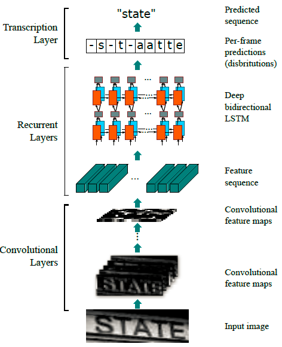
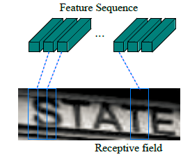
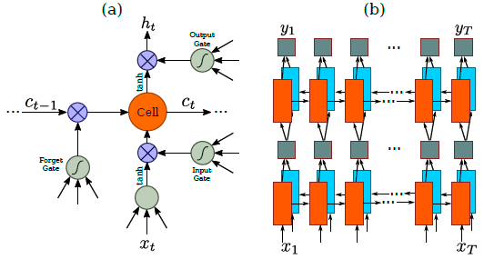
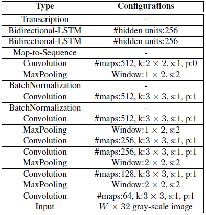
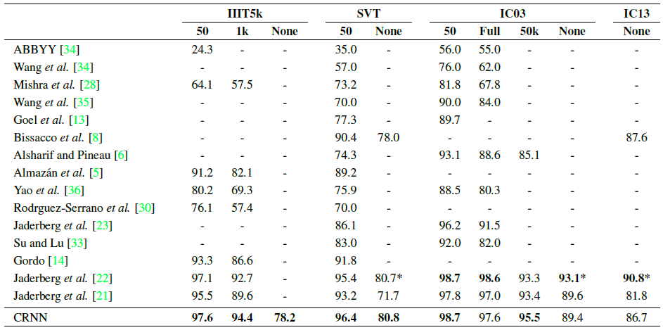
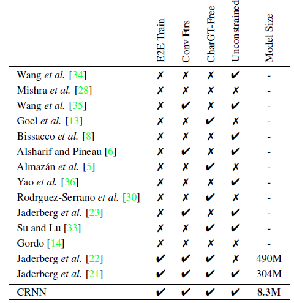
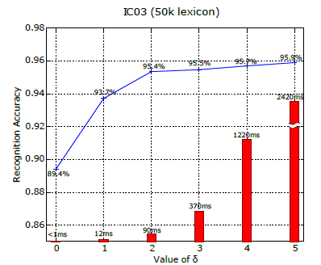
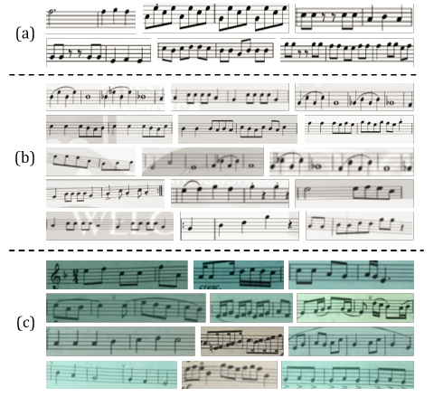
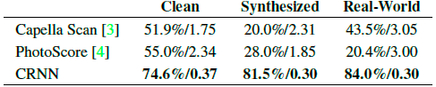

An End-to-End Trainable Neural Network for Image-based Sequence Recognition and Its Application to Scene Text Recognition
Authors: Shi, Baoguang (School of Electronic Information and Communications, Huazhong University of Science and Technology, Wuhan; 430074, China); Bai, Xiang; Yao, Cong
Source: IEEE Transactions on Pattern Analysis and Machine Intelligence, v 39, n 11, p 2298-2304, November 1, 2017
url:http://noahsnail.com/2017/08/21/2017-08-21-CRNN%E8%AE%BA%E6%96%87%E7%BF%BB%E8%AF%91%E2%80%94%E2%80%94%E4%B8%AD%E8%8B%B1%E6%96%87%E5%AF%B9%E7%85%A7/
Image-based sequence recognition has been a long-standing research topic in computer vision.
In this paper, we investigate the problem of scene text recognition, which is among the most important and challenging tasks in image-based sequence recognition.
A novel neural network architecture, which integrates feature extraction, sequence modeling and transcription into a unified framework, is proposed.
Compared with previous systems for scene text recognition, the proposed architecture possesses four distinctive properties: (1) It is end-to-end trainable, in contrast to most of the existing algorithms whose components are separately trained and tuned.
(2) It naturally handles sequences in arbitrary lengths, involving no character segmentation or horizontal scale normalization.
(3) It is not confined to any predefined lexicon and achieves remarkable performances in both lexicon-free and lexicon-based scene text recognition tasks.
(4) It generates an effective yet much smaller model, which is more practical for real-world application scenarios.
The experiments on standard benchmarks, including the IIIT-5K, Street View Text and ICDAR datasets, demonstrate the superiority of the proposed algorithm over the prior arts.
Moreover, the proposed algorithm performs well in the task of image-based music score recognition, which evidently verifies the generality of it.
Recently, the community has seen a strong revival of neural networks, which is mainly stimulated by the great success of deep neural network models, specifically Deep Convolutional Neural Networks (DCNN), in various vision tasks.
However, majority of the recent works related to deep neural networks have devoted to detection or classification of object categories [12, 25].
In this paper, we are concerned with a classic problem in computer vision: image-based sequence recognition.
In real world, a stable of visual objects, such as scene text, handwriting and musical score, tend to occur in the form of sequence, not in isolation.
Unlike general object recognition, recognizing such sequence-like objects often requires the system to predict a series of object labels, instead of a single label.
Therefore, recognition of such objects can be naturally cast as a sequence recognition problem.
Another unique property of sequence-like objects is that their lengths may vary drastically.
For instance, English words can either consist of 2 characters such as “OK” or 15 characters such as “congratulations”.
Consequently, the most popular deep models like DCNN [25, 26] cannot be directly applied to sequence prediction, since DCNN models often operate on inputs and outputs with fixed dimensions, and thus are incapable of producing a variable-length label sequence.
Some attempts have been made to address this problem for a specific sequence-like object (e.g. scene text).
For example, the algorithms in [35, 8] firstly detect individual characters and then recognize these detected characters with DCNN models, which are trained using labeled character images.
Such methods often require training a strong character detector for accurately detecting and cropping each character out from the original word image.
Some other approaches (such as [22]) treat scene text recognition as an image classification problem, and assign a class label to each English word (90K words in total).
It turns out a large trained model with a huge number of classes, which is difficult to be generalized to other types of sequence-like objects, such as Chinese texts, musical scores, etc., because the numbers of basic combinations of such kind of sequences can be greater than 1 million.
In summary, current systems based on DCNN can not be directly used for image-based sequence recognition.
Recurrent neural networks (RNN) models, another important branch of the deep neural networks family, were mainly designed for handling sequences.
One of the advantages of RNN is that it does not need the position of each element in a sequence object image in both training and testing.
However, a preprocessing step that converts an input object image into a sequence of image features, is usually essential.
For example, Graves et al. [16] extract a set of geometrical or image features from handwritten texts, while Su and Lu [33] convert word images into sequential HOG features.
The preprocessing step is independent of the subsequent components in the pipeline, thus the existing systems based on RNN can not be trained and optimized in an end-to-end fashion.
Several conventional scene text recognition methods that are not based on neural networks also brought insightful ideas and novel representations into this field.
For example, Almazan et al. [5] and Rodriguez-Serrano et al. [30] proposed to embed word images and text strings in a common vectorial subspace, and word recognition is converted into a retrieval problem.
Yao et al. [36] and Gordo et al. [14] used mid-level features for scene text recognition.
Though achieved promising performance on standard benchmarks, these methods are generally outperformed by previous algorithms based on neural networks [8, 22], as well as the approach proposed in this paper.
The main contribution of this paper is a novel neural network model, whose network architecture is specifically designed for recognizing sequence-like objects in images.
The proposed neural network model is named as Convolutional Recurrent Neural Network (CRNN), since it is a combination of DCNN and RNN.
For sequence-like objects, CRNN possesses several distinctive advantages over conventional neural network models: 1) It can be directly learned from sequence labels (for instance, words), requiring no detailed annotations (for instance, characters); 2) It has the same property of DCNN on learning informative representations directly from image data, requiring neither hand-craft features nor preprocessing steps, including binarization/segmentation, component localization, etc.; 3) It has the same property of RNN, being able to produce a sequence of labels; 4) It is unconstrained to the lengths of sequence-like objects, requiring only height normalization in both training and testing phases; 5) It achieves better or highly competitive performance on scene texts (word recognition) than the prior arts [23, 8]; 6) It contains much less parameters than a standard DCNN model, consuming less storage space.
2. The Proposed Network Architecture
The network architecture of CRNN, as shown in Fig. 1, consists of three components, including the convolutional layers, the recurrent layers, and a transcription layer, from bottom to top.

Figure 1.
The network architecture.
The architecture consists of three parts: 1) convolutional layers, which extract a feature sequence from the input image; 2) recurrent layers, which predict a label distribution for each frame; 3) transcription layer, which translates the per-frame predictions into the final label sequence.
At the bottom of CRNN, the convolutional layers automatically extract a feature sequence from each input image.
On top of the convolutional network, a recurrent network is built for making prediction for each frame of the feature sequence, outputted by the convolutional layers.
The transcription layer at the top of CRNN is adopted to translate the per-frame predictions by the recurrent layers into a label sequence.
Though CRNN is composed of different kinds of network architectures (eg. CNN and RNN), it can be jointly trained with one loss function.
2.1. Feature Sequence Extraction
In CRNN model, the component of convolutional layers is constructed by taking the convolutional and max-pooling layers from a standard CNN model (fully-connected layers are removed).
Such component is used to extract a sequential feature representation from an input image.
Before being fed into the network, all the images need to be scaled to the same height.
Then a sequence of feature vectors is extracted from the feature maps produced by the component of convolutional layers, which is the input for the recurrent layers.
Specifically, each feature vector of a feature sequence is generated from left to right on the feature maps by column.
This means the i-th feature vector is the concatenation of the i-th columns of all the maps.
The width of each column in our settings is fixed to single pixel.
As the layers of convolution, max-pooling, and element-wise activation function operate on local regions, they are translation invariant.
Therefore, each column of the feature maps corresponds to a rectangle region of the original image (termed the receptive field), and such rectangle regions are in the same order to their corresponding columns on the feature maps from left to right.
As illustrated in Fig. 2, each vector in the feature sequence is associated with a receptive field, and can be considered as the image descriptor for that region.

Figure 2.
The receptive field.
Each vector in the extracted feature sequence is associated with a receptive field on the input image, and can be considered as the feature vector of that field.
Being robust, rich and trainable, deep convolutional features have been widely adopted for different kinds of visual recognition tasks [25, 12].
Some previous approaches have employed CNN to learn a robust representation for sequence-like objects such as scene text [22].
However, these approaches usually extract holistic representation of the whole image by CNN, then the local deep features are collected for recognizing each component of a sequence-like object.
Since CNN requires the input images to be scaled to a fixed size in order to satisfy with its fixed input dimension, it is not appropriate for sequence-like objects due to their large length variation.
In CRNN, we convey deep features into sequential representations in order to be invariant to the length variation of sequence-like objects.
A deep bidirectional Recurrent Neural Network is built on the top of the convolutional layers, as the recurrent layers.
The recurrent layers predict a label distribution y_t for each frame x_t in the feature sequence x = x_1,…,x_T.
The advantages of the recurrent layers are three-fold.
Firstly, RNN has a strong capability of capturing contextual information within a sequence.
Using contextual cues for image-based sequence recognition is more stable and helpful than treating each symbol independently.
Taking scene text recognition as an example, wide characters may require several successive frames to fully describe (refer to Fig. 2).
Besides, some ambiguous characters are easier to distinguish when observing their contexts, e.g. it is easier to recognize “il” by contrasting the character heights than by recognizing each of them separately.
Secondly, RNN can back-propagates error differentials to its input, i.e. the convolutional layer, allowing us to jointly train the recurrent layers and the convolutional layers in a unified network.
Thirdly, RNN is able to operate on sequences of arbitrary lengths, traversing from starts to ends.
A traditional RNN unit has a self-connected hidden layer between its input and output layers.
Each time it receives a frame x_t in the sequence, it updates its internal state h_t with a non-linear function that takes both current input x_t and past state h_{t−1} as its inputs: h_t = g(x_t, h_{t−1}).
Then the prediction y_t is made based on h_t.
In this way, past contexts \lbrace x_{t\prime} \rbrace _{t \prime < t} are captured and utilized for prediction.
Traditional RNN unit, however, suffers from the vanishing gradient problem [7], which limits the range of context it can store, and adds burden to the training process.
Long-Short Term Memory 18, 11 is a type of RNN unit that is specially designed to address this problem.
An LSTM (illustrated in Fig. 3) consists of a memory cell and three multiplicative gates, namely the input, output and forget gates.
Conceptually, the memory cell stores the past contexts, and the input and output gates allow the cell to store contexts for a long period of time.
Meanwhile, the memory in the cell can be cleared by the forget gate.
The special design of LSTM allows it to capture long-range dependencies, which often occur in image-based sequences.

Figure 3. (a) The structure of a basic LSTM unit.
An LSTM consists of a cell module and three gates, namely the input gate, the output gate and the forget gate.
(b) The structure of deep bidirectional LSTM we use in our paper.
Combining a forward (left to right) and a backward (right to left) LSTMs results in a bidirectional LSTM.
Stacking multiple bidirectional LSTM results in a deep bidirectional LSTM.
LSTM is directional, it only uses past contexts.
However, in image-based sequences, contexts from both directions are useful and complementary to each other.
Therefore, we follow [17] and combine two LSTMs, one forward and one backward, into a bidirectional LSTM.
Furthermore, multiple bidirectional LSTMs can be stacked, resulting in a deep bidirectional LSTM as illustrated in Fig. 3. b.
The deep structure allows higher level of abstractions than a shallow one, and has achieved significant performance improvements in the task of speech recognition [17].
In recurrent layers, error differentials are propagated in the opposite directions of the arrows shown in Fig. 3. b, i.e. Back-Propagation Through Time (BPTT).
At the bottom of the recurrent layers, the sequence of propagated differentials are concatenated into maps, inverting the operation of converting feature maps into feature sequences, and fed back to the convolutional layers.
In practice, we create a custom network layer, called “Map-to-Sequence”, as the bridge between convolutional layers and recurrent layers.
Transcription is the process of converting the per-frame predictions made by RNN into a label sequence.
Mathematically, transcription is to find the label sequence with the highest probability conditioned on the per-frame predictions.
In practice, there exists two modes of transcription, namely the lexicon-free and lexicon-based transcriptions.
A lexicon is a set of label sequences that prediction is constraint to, e.g. a spell checking dictionary.
In lexicon-free mode, predictions are made without any lexicon.
In lexicon-based mode, predictions are made by choosing the label sequence that has the highest probability.
2.3.1 Probability of label sequence
We adopt the conditional probability defined in the Connectionist Temporal Classification (CTC) layer proposed by Graves et al. [15].
The probability is defined for label sequence l conditioned on the per-frame predictions y=y_1,…,y_T, and it ignores the position where each label in l is located.
Consequently, when we use the negative log-likelihood of this probability as the objective to train the network, we only need images and their corresponding label sequences, avoiding the labor of labeling positions of individual characters.
The formulation of the conditional probability is briefly described as follows: The input is a sequence y = y_1,…,y_T where T is the sequence length.
Here, each y_t \in\Re^{|{\cal L}’|} is a probability distribution over the set {\cal L}’ = {\cal L} \cup, where {\cal L} contains all labels in the task (e.g. all English characters), as well as a ’blank’ label denoted by -.
A sequence-to-sequence mapping function {\cal B} is defined on sequence \boldsymbol{\pi}\in{\cal L}’^{T}, where T is the length.
{\cal B} maps \boldsymbol{\pi} onto \mathbf{l} by firstly removing the repeated labels, then removing the blanks.
For example, B maps “–hh-e-l-ll-oo–” (’-’ represents ’blank’) onto “hello”.
Then, the conditional probability is defined as the sum of probabilities of all \boldsymbol{\pi} that are mapped by {\cal B} onto \mathbf{l}:
$$\begin{equation} p(\mathbf{l}|\mathbf{y})=\sum_{\boldsymbol{\pi}:{\cal B}(\boldsymbol{\pi})=\mathbf{l}}p(\boldsymbol{\pi}|\mathbf{y}),\tag{1} \end{equation} \tag{1}$$
where the probability of $\boldsymbol{\pi}$ is defined as $p(\boldsymbol{\pi}|\mathbf{y})=\prod{t=1}^{T}y{\pi{t}}^{t},y{\pi{t}}^{t}is the probability of having label\pi{t}at time stampt$. Directly computing Eq. 1 would be computationally infeasible due to the exponentially large number of summation items.
However, Eq.
1 can be efficiently computed using the forward-backward algorithm described in [15].
2.3.2 Lexicon-free transcription
In this mode, the sequence \mathbf{l}^{*} that has the highest probability as defined in Eq.
1 is taken as the prediction.
Since there exists no tractable algorithm to precisely find the solution, we use the strategy adopted in [15]. The sequence \mathbf{l}^{*} is approximately found by $\mathbf{l}^{*}\approx{\cal B}(\arg\max{\boldsymbol{\pi}}p(\boldsymbol{\pi}|\mathbf{y})), i.e. taking the most probable label\pi{t}at each time stampt, and map the resulted sequence onto\mathbf{l}^{*}$.
2.3.3 Lexicon-based transcription
In lexicon-based mode, each test sample is associated with a lexicon {\cal D}.
Basically, the label sequence is recognized by choosing the sequence in the lexicon that has highest conditional probability defined in Eq. 1, i.e. \mathbf{l}^{*}=\arg\max_{\mathbf{l}\in{\cal D}}p(\mathbf{l}|\mathbf{y}). However, for large lexicons, e.g. the 50k-words Hunspell spell-checking dictionary [1], it would be very time-consuming to perform an exhaustive search over the lexicon, i.e. to compute Equation.
1 for all sequences in the lexicon and choose the one with the highest probability. To solve this problem, we observe that the label sequences predicted via lexicon-free transcription, described in 2.3.2, are often close to the ground-truth under the edit distance metric.
This indicates that we can limit our search to the nearest-neighbor candidates {\cal N}_{\delta}(\mathbf{l}’), where \delta is the maximal edit distance and \mathbf{l}’ is the sequence transcribed from \mathbf{y} in lexicon-free mode:
$$\begin{equation} \mathbf{l}^{*}=\arg\max_{\mathbf{l}\in{\cal N}_{\delta}(\mathbf{l}’)}p(\mathbf{l}|\mathbf{y}).\tag{2} \end{equation} \tag{2}$$
The candidates {\cal N}_{\delta}(\mathbf{l}’) can be found efficiently with the BK-tree data structure[9], which is a metric tree specifically adapted to discrete metric spaces.
The search time complexity of BK-tree is O(\log|{\cal D}|), where |{\cal D}| is the lexicon size.
Therefore this scheme readily extends to very large lexicons.
In our approach, a BK-tree is constructed offline for a lexicon.
Then we perform fast online search with the tree, by finding sequences that have less or equal to \delta edit distance to the query sequence.
Denote the training dataset by ${\cal X}= \lbrace I_i,\mathbf{l}_i \rbrace _i$, where $I_{i}$ is the training image and \mathbf{l}_{i} is the ground truth label sequence.
The objective is to minimize the negative log-likelihood of conditional probability of ground truth:
$$\begin{equation} {\cal O}=-\sum_{I_{i},\mathbf{l}_{i}\in{\cal X}}\log p(\mathbf{l}_{i}|\mathbf{y}_{i}),\tag{3} \end{equation} \tag{3}$$
where $\mathbf{y}_{i}$ is the sequence produced by the recurrent and convolutional layers from $I_{i}$.
This objective function calculates a cost value directly from an image and its ground truth label sequence.
Therefore, the network can be end-to-end trained on pairs of images and sequences, eliminating the procedure of manually labeling all individual components in training images.
The network is trained with stochastic gradient descent (SGD).
Gradients are calculated by the back-propagation algorithm.
In particular, in the transcription layer, error differentials are back-propagated with the forward-backward algorithm, as described in [15].
In the recurrent layers, the Back-Propagation Through Time (BPTT) is applied to calculate the error differentials.
For optimization, we use the ADADELTA [37] to automatically calculate per-dimension learning rates.
Compared with the conventional momentum [31] method, ADADELTA requires no manual setting of a learning rate.
More importantly, we find that optimization using ADADELTA converges faster than the momentum method.
To evaluate the effectiveness of the proposed CRNN model, we conducted experiments on standard benchmarks for scene text recognition and musical score recognition, which are both challenging vision tasks. The datasets and setting for training and testing are given in Sec.
3.1, the detailed settings of CRNN for scene text images is provided in Sec. 3.2, and the results with the comprehensive comparisons are reported in Sec. 3.3.
To further demonstrate the generality of CRNN, we verify the proposed algorithm on a music score recognition task in Sec. 3.4.
For all the experiments for scene text recognition, we use the synthetic dataset (Synth) released by Jaderberg et al. [20] as the training data.
The dataset contains 8 millions training images and their corresponding ground truth words.
Such images are generated by a synthetic text engine and are highly realistic.
Our network is trained on the synthetic data once, and tested on all other real-world test datasets without any fine-tuning on their training data.
Even though the CRNN model is purely trained with synthetic text data, it works well on real images from standard text recognition benchmarks.
Four popular benchmarks for scene text recognition are used for performance evaluation, namely ICDAR 2003 (IC03), ICDAR 2013 (IC13), IIIT 5k-word (IIIT5k), and Street View Text (SVT).
IC03 [27] test dataset contains 251 scene images with labeled text bounding boxes. Following Wang et al.
[34], we ignore images that either contain non-alphanumeric characters or have less than three characters, and get a test set with 860 cropped text images.
Each test image is associated with a 50-words lexicon which is defined by Wang et al. [34].
A full lexicon is built by combining all the per-image lexicons.
In addition, we use a 50k words lexicon consisting of the words in the Hunspell spell-checking dictionary [1].
IC13 [24] test dataset inherits most of its data from IC03.
It contains 1,015 ground truths cropped word images.
IIIT5k [28] contains 3,000 cropped word test images collected from the Internet.
Each image has been associated to a 50-words lexicon and a 1k-words lexicon.
SVT [34] test dataset consists of 249 street view images collected from Google Street View.
From them 647 word images are cropped.
Each word image has a 50 words lexicon defined by Wang et al. [34].
3.2. Implementation Details
The network configuration we use in our experiments is summarized in Table 1.
The architecture of the convolutional layers is based on the VGG-VeryDeep architectures [32].
A tweak is made in order to make it suitable for recognizing English texts.
In the 3rd and the 4th max-pooling layers, we adopt 1 × 2 sized rectangular pooling windows instead of the conventional squared ones.
This tweak yields feature maps with larger width, hence longer feature sequence.
For example, an image containing 10 characters is typically of size 100 × 32, from which a feature sequence 25 frames can be generated.
This length exceeds the lengths of most English words.
On top of that, the rectangular pooling windows yield rectangular receptive fields (illustrated in Fig. 2), which are beneficial for recognizing some characters that have narrow shapes, such as ’i’ and ’l’.
Table 1.
Network configuration summary.
The first row is the top layer.
‘k’, ‘s’ and ‘p’ stand for kernel size, stride and padding size respectively.

The network not only has deep convolutional layers, but also has recurrent layers.
Both are known to be hard to train.
We find that the batch normalization [19] technique is extremely useful for training network of such depth.
Two batch normalization layers are inserted after the 5th and 6th convolutional layers respectively.
With the batch normalization layers, the training process is greatly accelerated.
We implement the network within the Torch7 [10] framework, with custom implementations for the LSTM units (in Torch7/CUDA), the transcription layer (in C++) and the BK-tree data structure (in C++).
Experiments are carried out on a workstation with a 2.50 GHz Intel(R) Xeon(R) E5-2609 CPU, 64GB RAM and an NVIDIA(R) Tesla(TM) K40 GPU.
Networks are trained with ADADELTA, setting the parameter ρ to 0.9.
During training, all images are scaled to 100 × 32 in order to accelerate the training process.
The training process takes about 50 hours to reach convergence.
Testing images are scaled to have height 32.
Widths are proportionally scaled with heights, but at least 100 pixels.
The average testing time is 0.16s/sample, as measured on IC03 without a lexicon.
The approximate lexicon search is applied to the 50k lexicon of IC03, with the parameter δ set to 3.
Testing each sample takes 0.53s on average.
3.3. Comparative Evaluation
All the recognition accuracies on the above four public datasets, obtained by the proposed CRNN model and the recent state-of-the-arts techniques including the approaches based on deep models [23, 22, 21], are shown in Table 2.
Table 2.
Recognition accuracies (%) on four datasets.
In the second row, “50”, “1k”, “50k” and “Full” denote the lexicon used, and “None” denotes recognition without a lexicon.
*[22] is not lexicon-free in the strict sense, as its outputs are constrained to a 90k dictionary.

In the constrained lexicon cases, our method consistently outperforms most state-of-the-arts approaches, and in average beats the best text reader proposed in [22].
Specifically, we obtain superior performance on IIIT5k, and SVT compared to [22], only achieved lower performance on IC03 with the “Full” lexicon.
Note that the model in[22] is trained on a specific dictionary, namely that each word is associated to a class label.
Unlike [22], CRNN is not limited to recognize a word in a known dictionary, and able to handle random strings (e.g. telephone numbers), sentences or other scripts like Chinese words.
Therefore, the results of CRNN are competitive on all the testing datasets.
In the unconstrained lexicon cases, our method achieves the best performance on SVT, yet, is still behind some approaches [8, 22] on IC03 and IC13.
Note that the blanks in the “none” columns of Table 2 denote that such approaches are unable to be applied to recognition without lexicon or did not report the recognition accuracies in the unconstrained cases.
Our method uses only synthetic text with word level labels as the training data, very different to PhotoOCR [8] which used 7.9 millions of real word images with character-level annotations for training.
The best persformance is reported by [22] in the unconstrained lexicon cases, benefiting from its large dictionary, however, it is not a model strictly unconstrained to a lexicon as mentioned before.
In this sense, our results in the unconstrained lexicon case are still promising.
For further understanding the advantages of the proposed algorithm over other text recognition approaches, we provide a comprehensive comparison on several properties named E2E Train, Conv Ftrs, CharGT-Free, Unconstrained, and Model Size, as summarized in Table 3.
Table 3.
Comparison among various methods.
Attributes for comparison include: 1) being end-to-end trainable (E2E Train); 2) using convolutional features that are directly learned from images rather than using hand-crafted ones (Conv Ftrs); 3) requiring no ground truth bounding boxes for characters during training (CharGT-Free); 4) not confined to a pre-defined dictionary (Unconstrained); 5) the model size (if an end-to-end trainable model is used), measured by the number of model parameters (Model Size, M stands for millions).

E2E Train: This column is to show whether a certain text reading model is end-to-end trainable, without any preprocess or through several separated steps, which indicates such approaches are elegant and clean for training.
As can be observed from Table 3, only the models based on deep neural networks including [22, 21] as well as CRNN have this property.
Conv Ftrs: This column is to indicate whether an approach uses the convolutional features learned from training images directly or handcraft features as the basic representations.
CharGT-Free: This column is to indicate whether the character-level annotations are essential for training the model.
As the input and output labels of CRNN can be a sequence, character-level annotations are not necessary.
Unconstrained: This column is to indicate whether the trained model is constrained to a specific dictionary, unable to handling out-of-dictionary words or random sequences.
Notice that though the recent models learned by label embedding [5, 14] and incremental learning [22] achieved highly competitive performance, they are constrained to a specific dictionary.
Model Size: This column is to report the storage space of the learned model.
In CRNN, all layers have weight-sharing connections, and the fully-connected layers are not needed.
Consequently, the number of parameters of CRNN is much less than the models learned on the variants of CNN [22, 21], resulting in a much smaller model compared with [22, 21].
Our model has 8.3 million parameters, taking only 33MB RAM (using 4-bytes single-precision float for each parameter), thus it can be easily ported to mobile devices.
Table 3 clearly shows the differences among different approaches in details, and fully demonstrates the advantages of CRNN over other competing methods.
In addition, to test the impact of parameter \delta, we experiment different values of \delta in Eq. 2.
In Fig.4 we plot the recognition accuracy as a function of \delta.
Larger \delta results in more candidates, thus more accurate lexicon-based transcription.
On the other hand, the computational cost grows with larger \delta, due to longer BK-tree search time, as well as larger number of candidate sequences for testing.
In practice, we choose \delta=3 as a tradeoff between accuracy and speed.

Figure 4.
Blue line graph: recognition accuracy as a function parameter \delta.
Red bars: lexicon search time per sample.
Tested on the IC03 dataset with the 50k lexicon.
3.4. Musical Score Recognition
A musical score typically consists of sequences of musical notes arranged on staff lines.
Recognizing musical scores in images is known as the Optical Music Recognition (OMR) problem.
Previous methods often requires image preprocessing (mostly binirization), staff lines detection and individual notes recognition [29].
We cast the OMR as a sequence recognition problem, and predict a sequence of musical notes directly from the image with CRNN.
For simplicity, we recognize pitches only, ignore all chords and assume the same major scales (C major) for all scores.
To the best of our knowledge, there exists no public datasets for evaluating algorithms on pitch recognition.
To prepare the training data needed by CRNN, we collect 2650 images from [2].
Each image contains a fragment of score containing 3 to 20 notes.
We manually label the ground truth label sequences (sequences of not ezpitches) for all the images.
The collected images are augmented to 265k training samples by being rotated, scaled and corrupted with noise, and by replacing their backgrounds with natural images.
For testing, we create three datasets: 1) “Clean”, which contains 260 images collected from [2]. Examples are shown in Fig. 5.
a; 2) “Synthesized”, which is created from “Clean”, using the augmentation strategy mentioned above.
It contains 200 samples, some of which are shown in Fig. 5. b; 3) “Real-World”, which contains 200 images of score fragments taken from music books with a phone camera.
Examples are shown in Fig. 5. c.

Figure 5. (a) Clean musical scores images collected from [2] (b) Synthesized musical score images.
(c) Real-world score images taken with a mobile phone camera.
Since we have limited training data, we use a simplified CRNN configuration in order to reduce model capacity.
Different from the configuration specified in Tab. 1, the 4th and 6th convolution layers are removed, and the 2-layer bidirectional LSTM is replaced by a 2-layer single directional LSTM.
The network is trained on the pairs of images and corresponding label sequences.
Two measures are used for evaluating the recognition performance: 1) fragment accuracy, i.e. the percentage of score fragments correctly recognized; 2) average edit distance, i.e. the average edit distance between predicted pitch sequences and the ground truths.
For comparison, we evaluate two commercial OMR engines, namely the Capella Scan [3] and the PhotoScore [4].
Tab.
4 summarizes the results.
The CRNN outperforms the two commercial systems by a large margin. The Capella Scan and PhotoScore systems perform reasonably well on the Clean dataset, but their performances drop significantly on synthesized and real-world data.
The main reason is that they rely on robust binarization to detect staff lines and notes, but the binarization step often fails on synthesized and real-world data due to bad lighting condition, noise corruption and cluttered background.
The CRNN, on the other hand, uses convolutional features that are highly robust to noises and distortions.
Besides, recurrent layers in CRNN can utilize contextual information in the score.
Each note is recognized not only itself, but also by the nearby notes.
Consequently, some notes can be recognized by comparing them with the nearby notes, e.g. contrasting their vertical positions.
Table 4.
Comparison of pitch recognition accuracies, among CRNN and two commercial OMR systems, on the three datasets we have collected.
Performances are evaluated by fragment accuracies and average edit distance (“fragment accuracy/average edit distance”).

The results have shown the generality of CRNN, in that it can be readily applied to other image-based sequence recognition problems, requiring minimal domain knowledge.
Compared with Capella Scan and PhotoScore, our CRNN-based system is still preliminary and misses many functionalities.
But it provides a new scheme for OMR, and has shown promising capabilities in pitch recognition.
In this paper, we have presented a novel neural network architecture, called Convolutional Recurrent Neural Network (CRNN), which integrates the advantages of both Convolutional Neural Networks (CNN) and Recurrent Neural Networks (RNN).
CRNN is able to take input images of varying dimensions and produces predictions with different lengths.
It directly runs on coarse level labels (e.g. words), requiring no detailed annotations for each individual element (e.g. characters) in the training phase.
Moreover, as CRNN abandons fully connected layers used in conventional neural networks, it results in a much more compact and efficient model.
All these properties make CRNN an excellent approach for image-based sequence recognition.
The experiments on the scene text recognition benchmarks demonstrate that CRNN achieves superior or highly competitive performance, compared with conventional methods as well as other CNN and RNN based algorithms.
This confirms the advantages of the proposed algorithm.
In addition, CRNN significantly outperforms other competitors on a benchmark for Optical Music Recognition (OMR), which verifies the generality of CRNN.
Actually, CRNN is a general framework, thus it can be applied to other domains and problems (such as Chinese character recognition), which involve sequence prediction in images.
To further speed up CRNN and make it more practical in real-world applications is another direction that is worthy of exploration in the future.